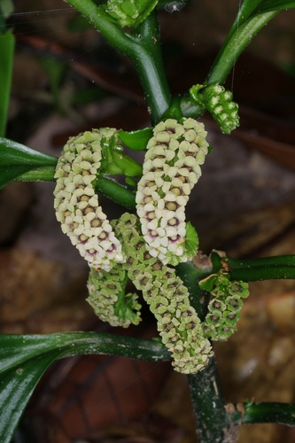

Pentaphragmataceae
(No common name widely used)
Pentaphragmataceae is a monogeneric family of flowering plants in the order Asterales, containing only the genus Pentaphragma with about 30 species. These plants are perennial, often somewhat succulent herbs found in the understory of tropical rainforests in Southeast Asia and Malesia. They are notable for their frequently asymmetrical leaves and dense clusters of small flowers.
Overview
The Pentaphragmataceae family consists solely of the genus Pentaphragma, distributed from southern China through Southeast Asia to New Guinea. These herbaceous plants typically grow in damp, shady conditions on the forest floor, often near streams or on limestone. They are characterized by their fleshy stems and leaves, which are often conspicuously asymmetrical, particularly at the base. The plants are frequently covered in multicellular hairs.
Flowers are small, usually 5-merous, and borne in dense, often one-sided cymose inflorescences arising from the leaf axils or appearing terminal. A key feature is the inferior or semi-inferior ovary, which develops into a fleshy berry crowned by the persistent calyx lobes. The family's placement within the order Asterales is well-supported by molecular data, where it represents an early diverging lineage, sister to the large clade containing Campanulaceae, Asteraceae, and related families.
Pentaphragmataceae has no significant economic importance, but its unique morphology and phylogenetic position make it of considerable interest to botanists studying the evolution of the Asterales order.
Quick Facts
- Scientific Name: Pentaphragmataceae J.Agardh
- Common Name: None widely used
- Number of Genera: 1 (Pentaphragma)
- Number of Species: Approximately 30
- Distribution: Southeast Asia (S China, Indochina) through Malesia (Malay Peninsula, Sumatra, Borneo, Philippines, New Guinea).
- Evolutionary Group: Eudicots - Asterids - Campanulids - Asterales
Key Characteristics
Growth Form and Habit
Perennial, somewhat succulent herbs, sometimes slightly woody at the base (subshrubs). Stems are often fleshy, creeping or ascending, and frequently covered in conspicuous multicellular hairs.
Leaves
Leaves are arranged alternately along the stem. They are simple, often large, and characteristically asymmetrical, especially at the base (one side of the lamina base is larger or extends lower than the other). Margins are entire or toothed (dentate/serrate) or sometimes lobed. Petioles are present. Stipules are absent.
Inflorescence
Flowers are borne in dense, axillary or pseudo-terminal cymes, often helicoid or scorpioid (coiled and one-sided). Bracts are usually present within the inflorescence.
Flowers
Flowers are bisexual, usually actinomorphic (radially symmetrical) or sometimes slightly zygomorphic, and typically 5-merous.
- Calyx: Consists of 5 sepals, fused at the base (connate), often unequal, and persistent, crowning the fruit.
- Corolla: Consists of 5 petals, fused at the base to form a short tube or nearly free (sympetalous). Corolla lobes are typically valvate or imbricate in bud, often white, yellowish, greenish, or pinkish.
- Androecium: Stamens are 5, alternating with the corolla lobes, inserted on the corolla tube or at its base near the ovary. Filaments are distinct; anthers typically open via longitudinal slits.
- Gynoecium: The ovary is inferior or sometimes half-inferior. It is composed of 2 or 3 fused carpels forming 2 or 3 locules (sometimes appearing unilocular towards the apex). Placentation is typically axile at the base, potentially becoming parietal above. Ovules are numerous. The style is single and simple, with a capitate (head-like) or slightly lobed stigma.
Fruits and Seeds
The fruit is a fleshy or leathery berry, crowned by the persistent calyx lobes. It contains numerous small seeds embedded in pulp. Seeds possess endosperm.
Chemical Characteristics
Plants contain inulin as a storage carbohydrate, a characteristic shared with many other families in the Asterales. Iridoid compounds appear to be absent.
Field Identification
Identifying Pentaphragma (Pentaphragmataceae) requires recognizing its specific combination of features within its Southeast Asian/Malesian range:
Primary Identification Features
- Geographic Location: Restricted to Southeast Asia and Malesia (tropical rainforests).
- Habit: Somewhat succulent herbs, often hairy, typically in shady, moist understory habitats.
- Leaves: Alternate, simple, characteristically asymmetrical at the base.
- Inflorescence: Dense, often coiled or one-sided cymes.
- Flowers: Small, 5-merous, with fused petals (sympetalous) and an inferior (or half-inferior) ovary.
- Fruit: Fleshy berry crowned by persistent calyx lobes.
Secondary Identification Features
- Hairs: Often covered in noticeable multicellular hairs.
- Stamens: 5, alternating with corolla lobes.
- Habitat: Forest floor, often near streams or on limestone.
Seasonal Identification Tips
- Year-round: The succulent habit and asymmetrical leaves are key vegetative features visible year-round in their rainforest habitat.
- Flowering/Fruiting Period: Check local botanical records. Flowers are small but clustered; berries are more conspicuous when mature.
Common Confusion Points
- Begoniaceae (Begonia Family): Also common in similar habitats, often succulent herbs with asymmetrical leaves. However, Begoniaceae typically have unisexual flowers (plants monoecious), lack fused petals (separate tepals), have numerous stamens in male flowers, and the fruit is usually a winged capsule (rarely a berry).
- Gesneriaceae (Gesneriad Family): Many tropical herbs in this family grow in similar habitats, often hairy. Gesneriaceae usually have opposite leaves (though sometimes alternate), strongly zygomorphic flowers (often tubular and bilabiate), typically 2 or 4 stamens (rarely 5), a superior or sometimes inferior ovary, and fruit usually a capsule or berry.
- Campanulaceae (Bellflower Family): Related family in Asterales. Often herbs with alternate leaves and 5-merous flowers with inferior ovaries, but typically have milky latex, often bell-shaped (campanulate) corollas, and fruit usually a capsule (though sometimes a berry). Leaves are usually symmetrical.
Field Guide Quick Reference (SE Asia/Malesia)
Look For:
- Succulent herb, often hairy
- Leaves: Alternate, simple, asymmetrical base
- Inflorescence: Dense cyme
- Flowers: 5-merous, sympetalous
- Ovary: Inferior / half-inferior
- Stamens: 5
- Fruit: Berry (crowned by calyx)
Key Distinctions:
- Asymmetrical leaves + Inferior ovary + Berry fruit
- Lacks milky latex (vs. Campanulaceae)
- Bisexual flowers (vs. Begoniaceae)
- Flowers usually actinomorphic, 5 stamens (vs. Gesneriaceae usually zygomorphic, 2/4 stamens)
- Monogeneric: Pentaphragma
Notable Example (The Only Genus)
The family contains only the genus Pentaphragma:

Pentaphragma spp.
(e.g., P. ellipticum)
The sole genus of Pentaphragmataceae, comprising about 30 species of succulent herbs from Southeast Asia and Malesia. They are characterized by their often hairy appearance, alternate and markedly asymmetrical leaves, dense cymose inflorescences, small 5-merous flowers with an inferior ovary, and berry fruits. They represent an early diverging lineage within the order Asterales.
Phylogeny and Classification
Pentaphragmataceae belongs to the large order Asterales, which is nested within the campanulid clade of asterids. This order includes major families like Asteraceae (sunflowers) and Campanulaceae (bellflowers).
Molecular phylogenetic studies place Pentaphragmataceae as an early diverging lineage within the Asterales. It is strongly supported as the sister group to the large clade containing the remaining families of the order, including Campanulaceae (incl. Lobeliaceae), Rousseaaceae, Stylidiaceae, Alseuosmiaceae, Phellinaceae, Argophyllaceae, Menyanthaceae, Goodeniaceae, Calyceraceae, and the massive Asteraceae family. This basal position makes Pentaphragmataceae crucial for understanding the early evolution of floral and vegetative traits within the Asterales.
Position in Plant Phylogeny (APG IV)
- Kingdom: Plantae
- Clade: Angiosperms (Flowering plants)
- Clade: Eudicots
- Clade: Asterids
- Clade: Campanulids
- Order: Asterales
- Family: Pentaphragmataceae
Evolutionary Significance
Pentaphragmataceae is evolutionarily important because:
- Basal Asterales Lineage: As the sister group to the rest of the Asterales, it provides critical insights into the ancestral characteristics of this massive and diverse order before major radiations like Asteraceae occurred.
- Morphological Traits: Features like asymmetrical leaves, succulent habit, inferior ovary, and berry fruit represent a unique combination within the context of early Asterales evolution.
- Biogeography: Its distribution in Southeast Asia/Malesia contributes to understanding the origins and dispersal patterns of the Asterales order.
- Lack of Iridoids/Latex: Its apparent lack of iridoids and milky latex (common in Campanulaceae) suggests these features evolved later within the main Asterales clade.